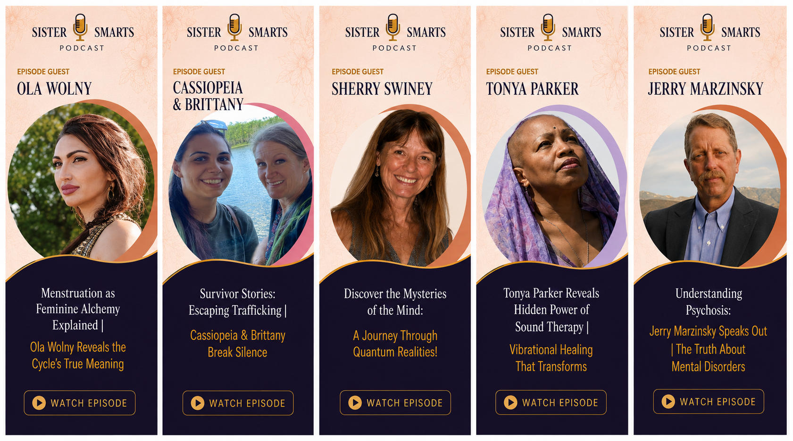
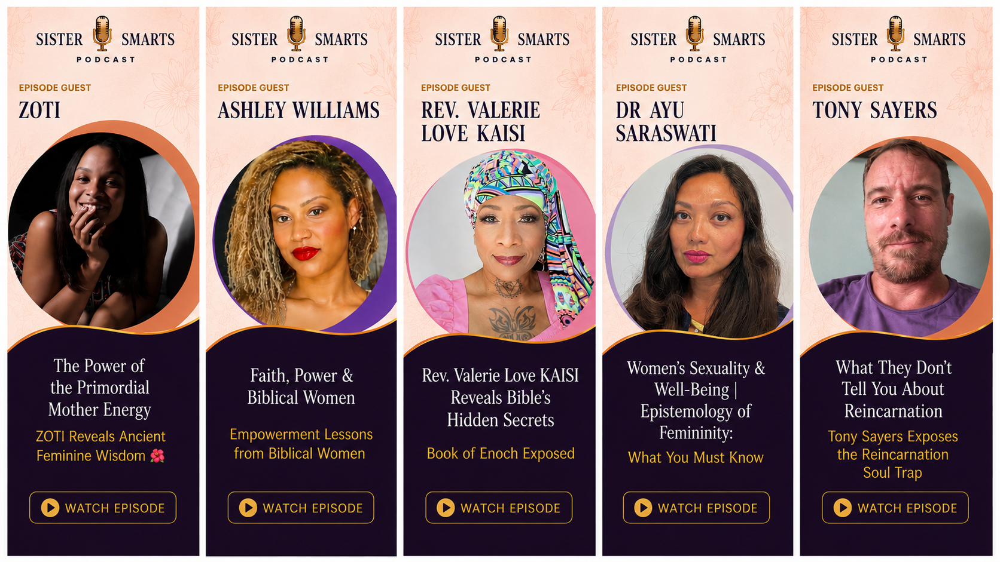

SisterSmarts
Real stories.
Transformative ideas.
Meaningful conversations.
"Every meaningful conversation begins with curiosity."
— Faith Wich
Real stories.
Transformative ideas.
Meaningful conversations.
Explore conversations with authors, educators, researchers, entrepreneurs, advocates, and remarkable people whose stories inspire lifelong learning.


Because meaningful conversations shape meaningful lives.
SisterSmarts was created to inspire thoughtful living through conversations that encourage curiosity, lifelong learning, and meaningful growth.
Each episode brings together authors, educators, nonprofit leaders, entrepreneurs, researchers, and everyday people whose experiences offer wisdom worth sharing.
Our hope is simple: that every conversation leaves you thinking a little deeper, learning something new, and becoming just a little wiser than before.
A thoughtful newsletter for lifelong learners. Receive reflections, books, conversations, leadership insights, and practical wisdom— delivered with intention, never clutter.
Join Faith NotesOccasionally sent. Always thoughtful.
Choose the platform you enjoy most and join thousands of listeners exploring conversations that challenge ideas, inspire growth, and encourage thoughtful living.
▶ YouTube 🎧 SpotifyEvery conversation is an invitation to think more deeply, question more thoughtfully, and grow with wisdom.
Thoughtful conversations that encourage listening, curiosity, understanding, and respectful dialogue across different perspectives.
Exploring the many roles women play across cultures, relationships, leadership, family, and society through honest conversation.
Examining overlooked ideas, untold stories, research, and perspectives that challenge conventional thinking.
Exploring where science, human consciousness, nature, faith, and spirituality meet in meaningful ways.
Identity, relationships, purpose, resilience, healing, and the experiences that shape who we become.
Conversations with authors, researchers, educators, entrepreneurs, and changemakers exploring the ideas shaping tomorrow.
We welcome thoughtful conversations with authors, educators, researchers, leaders, entrepreneurs, creatives, and changemakers whose stories encourage others to learn and grow.
Apply to Join the ConversationGlobal Impact
Every conversation inspires action. Through our SisterSmarts Kiva community, we help fund entrepreneurs around the world— creating opportunities for women, families, and entire communities.

Loans Funded
Countries Reached
Lives Impacted
"The best conversations don't simply give us answers. They teach us how to ask better questions."
— Faith Wich